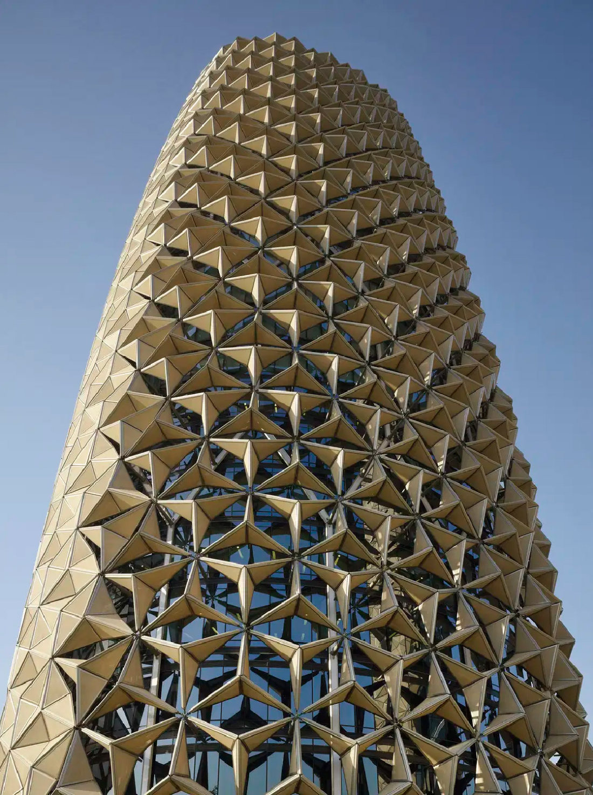
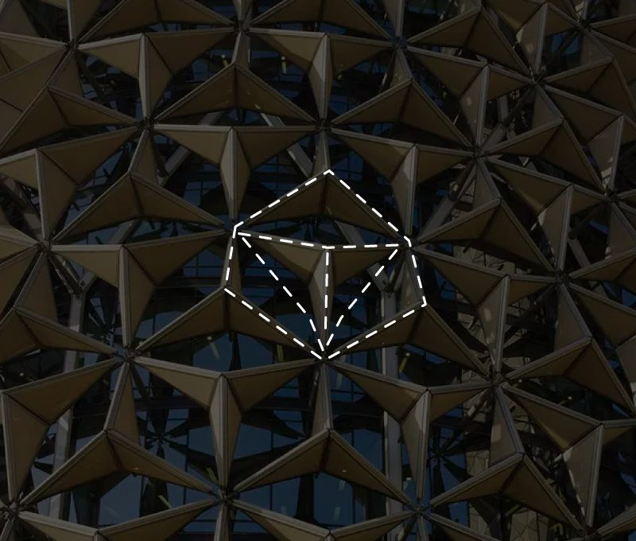
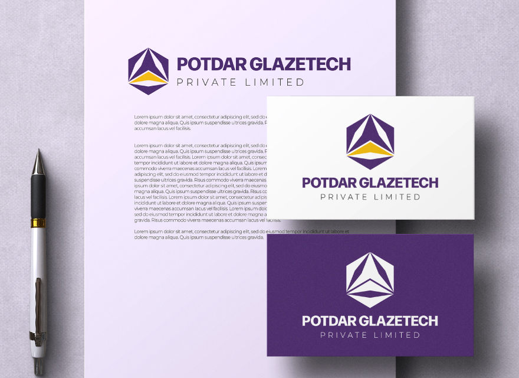
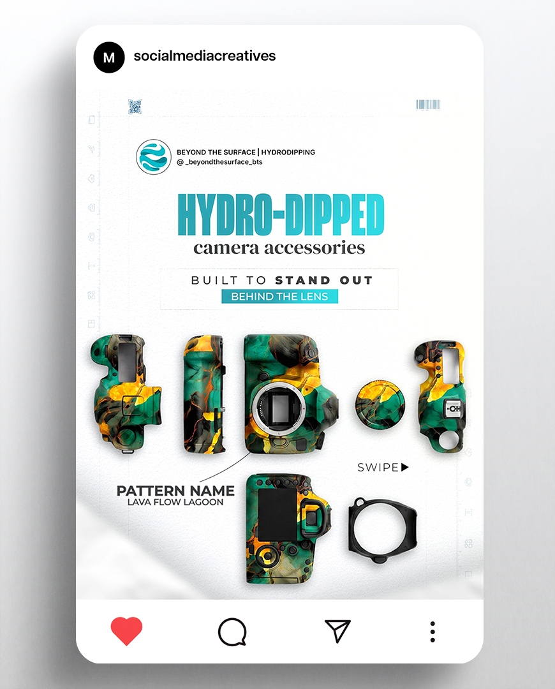
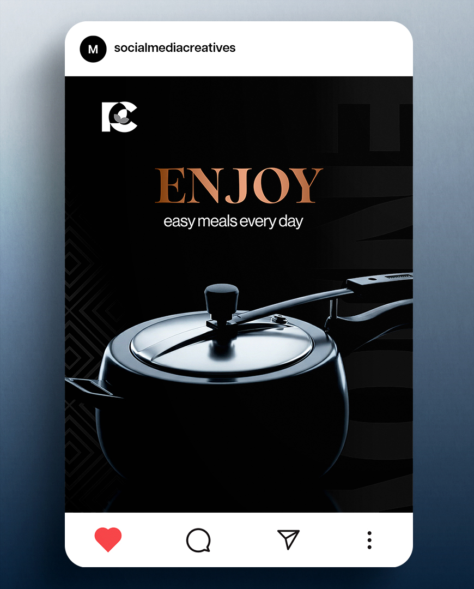
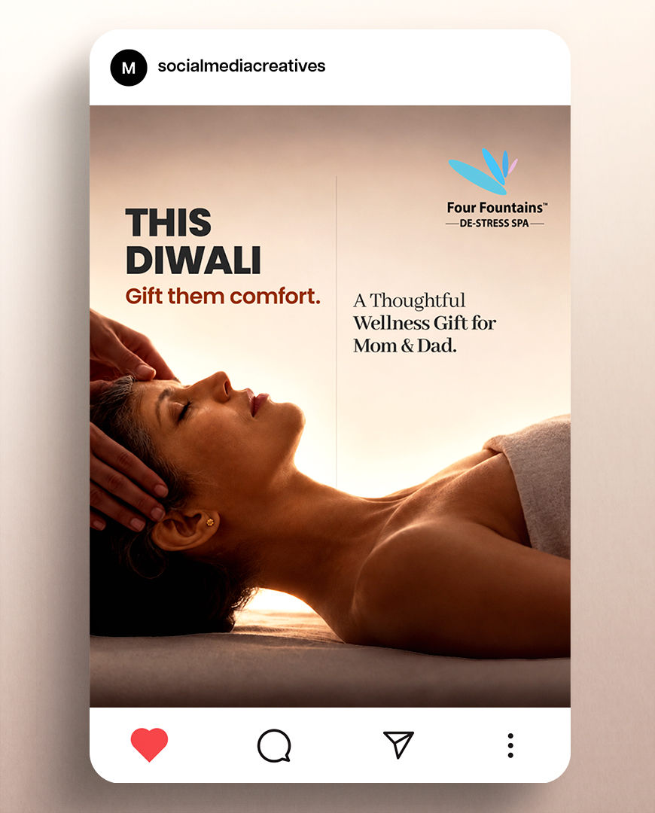
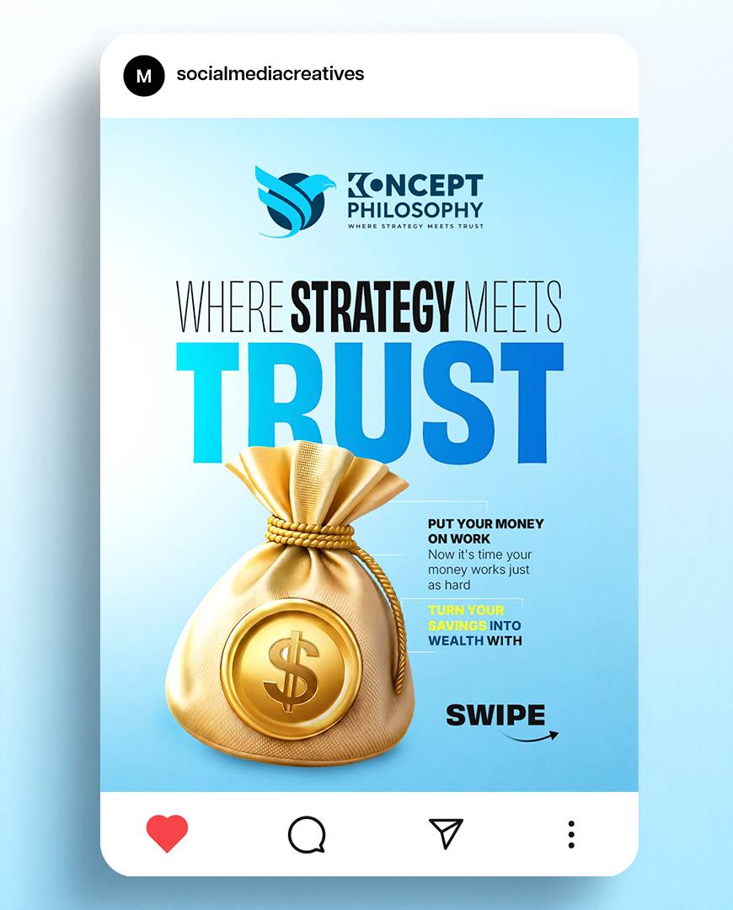

01 · Brand Identity
Real Estate Identity
01
The brief
“We build building fronts. Our Vastu consultant says the logo must have a rectangle or a hexagon, with an arrow moving upward.”
02
The process

Started with real façades. The hexagonal shading screen of Abu Dhabi’s Al Bahar Towers.

Built for precision. One mark that holds up on a visiting card or a three-metre sign.

Traced the shapes. Triangles in the façade became the hexagon and the arrow.

Fused, not stacked. Hexagon + upward arrow became one shape, so the Vastu brief reads as a single idea instead of three symbols.
03
The outcome


Social Media
Creatives



